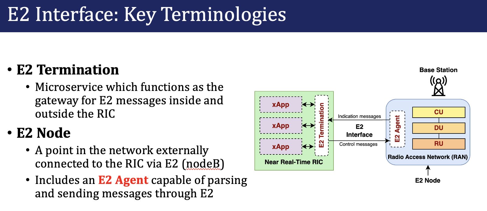
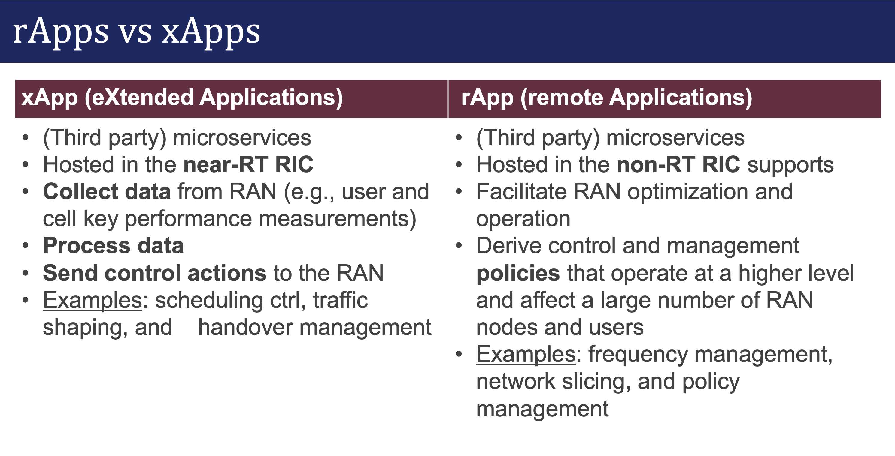
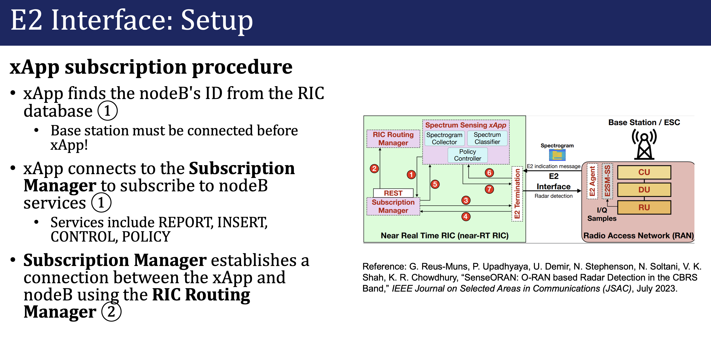
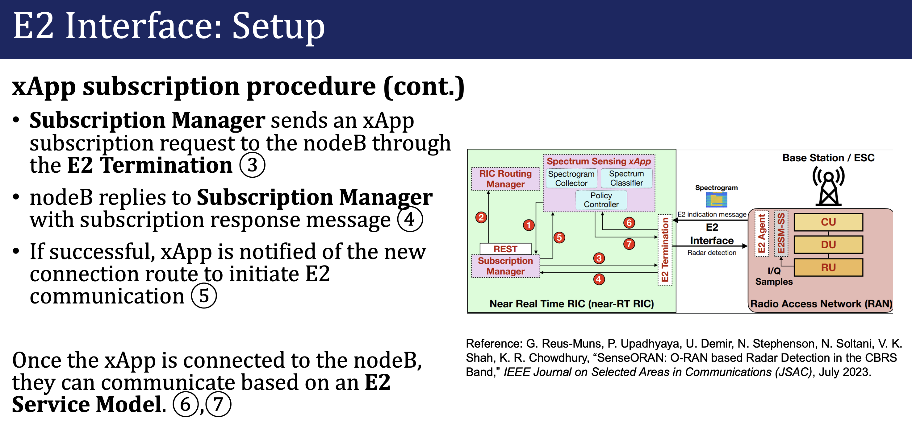

Session 1 - Setup Requirements
System Requirements
Operating System: Ubuntu 24.04 LTS (x86, 64-bit)
ARM devices such as MacBook M1 (Apple silicon) are unsupported!
CPU: At least 8 cores
We will be running the base station and the user on one system, so ideally more cores is better.
RAM: 32GB
Install Dependencies
sudo apt install git vim tree net-tools libsctp-dev python3.8 cmake-curses-gui libpcre2-dev python-dev build-essential cmake libfftw3-dev libmbedtls-dev libboost-program-options-dev libconfig++-dev libtool autoconf python3-pip curl bison flex iperf unzip
Install Swig 4.1
git clone https://github.com/swig/swig.git
cd swig
git checkout release-4.1
./autogen.sh
./configure --prefix=/usr/
make -j8
sudo make install
Check GCC Version (gcc-10, gcc-12, or gcc-13)
gcc --version
Warning
If you see that you have gcc 11, follow the steps given here to switch to a different version
Install Docker Compose
sudo apt install -y putty ca-certificates gnupg
sudo install -m 0755 -d /etc/apt/keyrings
curl -fsSL https://download.docker.com/linux/ubuntu/gpg | sudo gpg --dearmor -o /etc/apt/keyrings/docker.gpg
sudo chmod a+r /etc/apt/keyrings/docker.gpg
echo "deb [arch="$(dpkg --print-architecture)" signed-by=/etc/apt/keyrings/docker.gpg] https://download.docker.com/linux/ubuntu "$(. /etc/os-release && echo "$VERSION_CODENAME")" stable" | sudo tee /etc/apt/sources.list.d/docker.list > /dev/null
sudo apt-get update
sudo apt install -y docker-buildx-plugin docker-compose-plugin
Check docker compose version. The installed version should be v2.29.
sudo docker compose version
Note
Optional Step: If you do not want to use sudo while executing docker compose commands, run sudo usermod -a -G docker $(whoami) and reboot the machine.
Session 2 - OAI Installation
Refer to the presentation (PIMRC slides 5-10)
1G-5G timeline
Reference Cellular Architecture (RAN)
Evolution of RAN (vRAN and O-RAN)
Open RAN (Radio Access Network) is a virtualized, disaggregated design paradigm for 5G/6G cellular networks. It refers to the concept of a cellular network that is built on open interfaces and modular components.
Open RAN is important because it…
enables networks built from components by multiple vendors, replacing the current proprietary systems belonging to each vendor and mobile carrier
allows vendors to share physical and cloud resources in the same cell tower
is desirable as an industry standard; for example, the U.S. has awarded over $100M to Open RAN projects this year.
O-RAN is Open RAN as defined by O-RAN ALLIANCE, which is a worldwide community of mobile network operators, vendors, and research & academic institutions. “O-RAN ALLIANCE’s mission <https://www.o-ran.org/about> is to re-shape the RAN industry towards more intelligent, open, virtualized and fully interoperable mobile networks.”
Thare are various open-source software solutions built upon the 5G and O-RAN standards. The one we will use in this training is OpenAirInterface or OAI, which is a software stack providing the components needed for an operational radio access network purely implemented in software.
The major components are:
The 5G core network
The gNB / gNodeB / base station (BS)
In O-RAN, the gNB can be split between the Centralized Unit (CU) and the Distributed Unit (DU), where the CU contains the higher-level layers of the network protocol stack and the DU contains the lower layers.
The user equipment (UE)
Setup OAI 5G Core Network
In this demo, we will employ the Core Network solution provided by Open Air Interface. This solution deploys network functions as docker containers. The CN components can be customized according to experimental requirements by modifying the configuration files. However, for the purposes of this tutorial we retain the default functionality.
Get Core Network Configuration files and docker images
cd
wget -O ~/oai-cn5g.zip https://gitlab.eurecom.fr/oai/openairinterface5g/-/archive/develop/openairinterface5g-develop.zip?path=doc/tutorial_resources/oai-cn5g
unzip ~/oai-cn5g.zip
mv ~/openairinterface5g-develop-doc-tutorial_resources-oai-cn5g/doc/tutorial_resources/oai-cn5g ~/oai-cn5g
rm -r ~/openairinterface5g-develop-doc-tutorial_resources-oai-cn5g ~/oai-cn5g.zip
cd ~/oai-cn5g
sudo docker compose pull
Test the deployment of Core Network
sudo docker compose up -d

Verify that all the 10 containers are deployed and healthy.
sudo docker ps -a

Turn the core network off.
sudo docker compose down
If you prefer seeing real-time container logs streaming to your terminal, run the docker compose command without the -d flag. In that mode, pressing Ctrl+C will stop all containers!
Setup OAI Radio Access Network and UE
Clone the OAI 5G RAN repository from GitLab, and check out the develop branch.
git clone https://gitlab.eurecom.fr/oai/openairinterface5g.git ~/oai
cd ~/oai
git checkout develop
Install OAI dependencies:
cd ~/oai/cmake_targets/
sudo ./build_oai -I -w SIMU --gNB --nrUE --build-e2 --ninja
This installs a couple important packages required by OAI gNB and UE, including libsctp-dev, libtool, SIMDE and most importantly, ASN.1. The installation logs are not displayed on your terminal, it will be written to file in your log directory, double check to ensure ASN.1 was installed properly. See parts of the logs for this step below:
Install nrscope dependencies:
sudo apt install -y libforms-dev libforms-bin
Next, we can build the binaries for the OAI base station (gNB) and the OAI user (UE).
cd ~/openairinterface5g/cmake_targets
sudo ./build_oai -w SIMU --ninja --nrUE --gNB --build-lib "nrscope" -C
In a real world system, the core, gNB, and UE would be located on separate systems, but for simplicity we will run everything together on one system.
Note that we compile with the -w SIMU option which means that we want to use a simulated radio instead of a physical radio such as a USRP software-defined radio. For a USRP we would change this to -w USRP.
Session 3 - Using RFSimulator with OAI
5G CN, gNodeB, OAI open-source overview
How it works end to end with a RF Simulated OAI-gNodeB and OAI NR-UE
Deploy 5G Network
Start the Core Network
In Terminal 1,
cd ~/oai-cn5g
sudo docker compose up -d
cd ~/
Check if the Core Network is up and running
sudo docker ps -a
Start the gNB
In Terminal 1,
cd ~/oai/cmake_targets/ran_build/build
sudo ./nr-softmodem -O ../../../targets/PROJECTS/GENERIC-NR-5GC/CONF/gnb.sa.band78.fr1.106PRB.usrpb210.conf --gNBs.[0].min_rxtxtime 6 --rfsim --sa

Start the UE
In terminal 2,
cd ~/oai/cmake_targets/ran_build/build
sudo ./nr-uesoftmodem -r 106 --numerology 1 --band 78 -C 3619200000 --rfsim --sa --uicc0.imsi 001010000000001 --rfsimulator.serveraddr 127.0.0.1
How to perform traffic tests
Exchange traffic between Network and UE
Streaming Traffic using Ping
For uplink ping - UE to network
In terminal 4,
ping 192.168.70.135 -I oaitun_ue1
For Downlink ping - Network to UE
sudo docker exec -it oai-ext-dn ping <ue_ip>
Use ctrl+c or ctrl+d to stop/exit the ping processes.
Streaming Traffic with iPerf
Downlink iPerf
Find out the IP address of the UE by running ifconfig on the UE machine and check the IP address field of oaitun_ue1 network Interface. Here we initialize an iperf server for UDP traffic.
In terminal 4,
iperf -s -u -i 1 -B <ue_ip>
The below command generates UDP traffic for 100 seconds, at the rate of 10Mbps from the Core network. In terminal 5,
sudo docker exec -it oai-ext-dn iperf -u -t 100 -i 1 -fk -B 192.168.70.135 -b 10M -c <ue_ip>
Uplink iperf
On terminal 4, initialize the iperf server (metrics are printed every second) for TCP traffic run,
sudo docker exec -it oai-ext-dn iperf -s -i 1 -fk -B 192.168.70.135
In terminal 5, run
iperf -c 192.168.70.135 -i 1 -b 10M -B <ue_ip>
Session 4 - OAI Installation
O-RAN is the Open RAN as defined by O-RAN ALLIANCE, which is a worldwide community of mobile network operators, vendors, and research & academic institutions. “O-RAN ALLIANCE’s mission is to re-shape the RAN industry towards more intelligent, open, virtualized and fully interoperable mobile networks.”
Founded by AT&T, China Mobile, Deutsche Telekom, NTT DOCOMO and Orange in Feb 2018
Based on two core principles: Openness, Intelligence
Flexibility by design
Open interfaces and APIs
RAN Intelligent Controllers (RICs)
Abstract the networks
Allow telecom operators to implement custom control logic
For more information, refer to the presentation (PIMRC slides 5-39)
Setup OAI Radio Access Network and UE
Clone the OAI 5G RAN repository and checkout the oaic_workshop_2024_v1 branch.
git clone https://github.com/openaicellular/openairinterface5G.git ~/oai
cd ~/oai
git checkout oaic_workshop_2024_v1
cd ~/oai/cmake_targets/
./build_oai -I -w SIMU --gNB --nrUE --build-e2 --ninja

Session 5 - FlexRIC Installation
Setup FlexRIC
Clone the OAI 5G RAN repository and checkout the beabdd07 commit.
git clone https://github.com/openaicellular/flexric.git ~/flexric
cd ~/flexric
git checkout beabdd07
Build the flexRIC module.
mkdir build
cd build
cmake ../

make -j`nproc`
sudo make install
{kind=link}
Deploy 5G Network
Start the Core Network
In Terminal 1,
cd ~/oai-cn5g
sudo docker compose up -d
cd ~/
Check if the Core Network is up and running
sudo docker ps -a
Start the gNB
In Terminal 1,
cd ~/oai/cmake_targets/ran_build/build
sudo ./nr-softmodem -O ../../../targets/PROJECTS/GENERIC-NR-5GC/CONF/gnb.sa.band78.fr1.106PRB.usrpb210.conf --gNBs.[0].min_rxtxtime 6 --rfsim --sa
Start the UE
In terminal 2,
cd ~/oai/cmake_targets/ran_build/build
sudo ./nr-uesoftmodem -r 106 --numerology 1 --band 78 -C 3619200000 --rfsim --sa --uicc0.imsi 001010000000001 --rfsimulator.serveraddr 127.0.0.1
Start the near-RT RIC
In terminal 3,
cd ~/
./flexric/build/examples/ric/nearRT-RIC


Exchange traffic between Network and UE
Streaming Traffic with iPerf
Uplink iperf
On terminal 4, initialize the iperf server (metrics are printed every second) for TCP traffic run,
sudo docker exec -it oai-ext-dn iperf -s -i 1 -fk -B 192.168.70.135
In terminal 5, run
iperf -c 192.168.70.135 -i 1 -b 10M -B <ue_ip>
Session 6 - xApp onboarding, deployment
Background
An xApp is simply an application that is deployed to the near-real-time RAN Intelligent Controller (RIC) and is capable of communicating to the RAN. An xApp can be developed in any programming language, but to be O-RAN compliant, it needs to be able to communicate over the E2 interface to E2 nodes. An E2 Node refers to a component of the RAN that can interface with the RIC via E2, usually referring to the base station (DU/CU). Note that the user has no direct connection to the E2 interface; when we refer to the RAN in this context, we generally mean the base station.
{kind=link}
There is also a non-real-time RIC; applications stored in the non-real-time RIC are called rApps instead. Near-real-time applications are defined as running within 10ms to 1 second, while a non-real-time application takes longer than 1 second.
Below is a comparison between xApps and rApps:
{kind=link}
What problems in 5G networks can xApps can solve?
Spectrum sharing - Ensuring multiple networks on the same frequency do not interfere with each other
Interference detection and mitigation - detecting interference through performance metrics or spectrograms and moving communications away from interfered frequencies
Radar detection - in order to avoid interference between radar and 5G networks, see SenseORAN
Anomaly detection - identifying users in the network which maliciously disrupt the RAN or other xApps from working properly
Traffic steering - looking at user behavior and connecting them to different cells in the RAN for load balancing or energy saving
How do xApps work in the RIC?
To understand how an xApp works, first we must look at how an O-RAN network is implemented. The RAN Intelligent Controller (RIC) is capable of dynamically controlling the RAN. The near-RT RIC that we will use with OAI is called FlexRIC.
FlexRIC consists of a collection of microservices, which are small containerized programs. These containers are created and deployed using Docker, using an image that we prepare beforehand that consists of everything needed for the application to start instantly. FlexRIC acts as a message broker between xApps and E2 nodes by providing the E2 termination, the point at which all the xApps and E2 nodes connect to communicate with each other. The xApps we will use are hosted on a single Docker container, but several microservices could make up a single xApp.
The E2 interface is based on the O-RAN ALLIANCE’s specifications. Messages are encoded through the ASN.1 standard, which allows messages to be encoded in binary according to a specification file. ASN.1 encoding and decoding is implemented for many programming languages, allowing E2 and xApp specifications to be theoretically language-agnostic.
xApps can define the contents of the data that they send and receive by writing an ASN.1 specification. We refer to an xApp’s message specification as a service model.
Below is an excerpt of example ASN.1 syntax:
Metrics ::= SEQUENCE {
MCS INTEGER (0.. 28, ...) OPTIONAL,
bitrateMbps INTEGER (0.. 65535, ...) OPTIONAL,
...
}
DownlinkMetrics ::= SEQUENCE {
CQI INTEGER (0.. 15, ...) OPTIONAL,
metrics Metrics,
...
}
IndicationMessage ::= SEQUENCE {
Payload DownlinkMetrics
}
The O-RAN specifications are available on the O-RAN ALLIANCE’s website: https://specifications.o-ran.org/specifications Some examples of E2 service models which are standardized by the O-RAN ALLIANCE include:
E2SM-KPM, which allows the RAN to send key performance metrics to an xApp,
such as the bitrate and error rate for each user
E2SM Cell Configuration and Control, which allows an xApp to control the RAN at the node and cell levels
E2SM RAN control, which allows an xApp to control the RAN at the UE and cell levels
xApps are persistent in the RIC and run continuously. Since the RIC can be connected to multiple RANs, xApps wait for base stations to connect. When connecting to the RIC, the RAN must subscribe to any xApps that it wants to communicate with.
 {kind=link}
{kind=link}
Run xApps
KPIMON xApp
First we will run the KPIMON xApp and observe some metrics. This xApp is based on the E2SM-KPM (Key Performance Metrics) service model. It is responsible for collecting metrics collected by the RAN and forwarding it to relevant xApps to help in RAN control.
The KPM service model sends data from the RAN to the RIC, which we call an indication message.
When we want the RIC to control the RAN, we must send a control message from the xApp, but in this case, we only receive indication messages.
Per O-RAN specifications, 5G measurements supported by KPM are specified in 3GPP TS 28.552. Some of the metrics supported are DRB.PdcpSduVolumeDL, DRB.PdcpSduVolumeUL, DRB.RlcSduDelayDl, DRB.UEThpDl, DRB.UEThpUl, RRU.PrbTotDl, RRU.PrbTotUl.
In this implementation Report Style 4 (Section 7.4.5) has been considered.
In a new Terminal, run
cd ~/flexric
./build/examples/xApp/c/monitor/xapp_kpm_moni
The output should look like this:
Behind the scenes
FlexRIC supports writing xApps in C or Python.
Writing an xApp in C is fairly simple. Looking at the KPIMON xApp:
int main(int argc, char *argv[])
{
fr_args_t args = init_fr_args(argc, argv);
//Init the xApp
init_xapp_api(&args);
sleep(1);
e2_node_arr_t nodes = e2_nodes_xapp_api();
defer({ free_e2_node_arr(&nodes); });
assert(nodes.len > 0);
printf("Connected E2 nodes = %d\n", nodes.len);
// KPM indication
sm_ans_xapp_t* kpm_handle = NULL;
if(nodes.len > 0){
kpm_handle = calloc( nodes.len, sizeof(sm_ans_xapp_t) );
assert(kpm_handle != NULL);
}
for (int i = 0; i < nodes.len; i++) {
e2_node_connected_t* n = &nodes.n[i];
for (size_t j = 0; j < n->len_rf; j++)
printf("Registered node %d ran func id = %d \n ", i, n->ack_rf[j].id);
////////////
// START KPM
////////////
kpm_sub_data_t kpm_sub = {0};
defer({ free_kpm_sub_data(&kpm_sub); });
// KPM Event Trigger
uint64_t period_ms = 1000;
kpm_sub.ev_trg_def = gen_ev_trig(period_ms);
printf("[xApp]: reporting period = %lu [ms]\n", period_ms);
// KPM Action Definition
kpm_sub.sz_ad = 1;
kpm_sub.ad = calloc(1, sizeof(kpm_act_def_t));
assert(kpm_sub.ad != NULL && "Memory exhausted");
// ...
const int KPM_ran_function = 2;
// sm_cb_kpm is our callback function when a KPM indication message is received
kpm_handle[i] = report_sm_xapp_api(&nodes.n[i].id, KPM_ran_function, &kpm_sub, sm_cb_kpm);
assert(kpm_handle[i].success == true);
}
static
void sm_cb_kpm(sm_ag_if_rd_t const* rd)
{
assert(rd != NULL);
assert(rd->type == INDICATION_MSG_AGENT_IF_ANS_V0);
assert(rd->ind.type == KPM_STATS_V3_0);
// Reading Indication Message Format 3
kpm_ind_data_t const* ind = &rd->ind.kpm.ind;
kpm_ric_ind_hdr_format_1_t const* hdr_frm_1 = &ind->hdr.kpm_ric_ind_hdr_format_1;
kpm_ind_msg_format_3_t const* msg_frm_3 = &ind->msg.frm_3;
int64_t const now = time_now_us();
static int counter = 1;
{
lock_guard(&mtx);
printf("\n%7d KPM ind_msg latency = %ld [μs]\n", counter, now - hdr_frm_1->collectStartTime); // xApp <-> E2 Node
// Reported list of measurements per UE
for (size_t i = 0; i < msg_frm_3->ue_meas_report_lst_len; i++)
{
switch (msg_frm_3->meas_report_per_ue[i].ue_meas_report_lst.type)
{
case GNB_UE_ID_E2SM:
if (msg_frm_3->meas_report_per_ue[i].ue_meas_report_lst.gnb.gnb_cu_ue_f1ap_lst != NULL)
{
for (size_t j = 0; j < msg_frm_3->meas_report_per_ue[i].ue_meas_report_lst.gnb.gnb_cu_ue_f1ap_lst_len; j++)
{
printf("UE ID type = gNB-CU, gnb_cu_ue_f1ap = %u\n", msg_frm_3->meas_report_per_ue[i].ue_meas_report_lst.gnb.gnb_cu_ue_f1ap_lst[j]);
}
}
else
{
printf("UE ID type = gNB, amf_ue_ngap_id = %lu\n", msg_frm_3->meas_report_per_ue[i].ue_meas_report_lst.gnb.amf_ue_ngap_id);
}
break;
case GNB_DU_UE_ID_E2SM:
printf("UE ID type = gNB-DU, gnb_cu_ue_f1ap = %u\n", msg_frm_3->meas_report_per_ue[i].ue_meas_report_lst.gnb_du.gnb_cu_ue_f1ap);
break;
default:
assert(false && "UE ID type not yet implemented");
}
kpm_ind_msg_format_1_t const* msg_frm_1 = &msg_frm_3->meas_report_per_ue[i].ind_msg_format_1;
// UE Measurements per granularity period
for (size_t j = 0; j<msg_frm_1->meas_data_lst_len; j++)
{
for (size_t z = 0; z<msg_frm_1->meas_data_lst[j].meas_record_len; z++)
{
if (msg_frm_1->meas_info_lst_len > 0)
{
switch (msg_frm_1->meas_info_lst[z].meas_type.type)
{
case NAME_MEAS_TYPE:
{
// Get the Measurement Name
char meas_info_name_str[msg_frm_1->meas_info_lst[z].meas_type.name.len + 1];
memcpy(meas_info_name_str, msg_frm_1->meas_info_lst[z].meas_type.name.buf, msg_frm_1->meas_info_lst[z].meas_type.name.len);
meas_info_name_str[msg_frm_1->meas_info_lst[z].meas_type.name.len] = '\0';
// Get the value of the Measurement
switch (msg_frm_1->meas_data_lst[j].meas_record_lst[z].value)
{
case REAL_MEAS_VALUE:
{
if (strcmp(meas_info_name_str, "DRB.RlcSduDelayDl") == 0)
{
printf("DRB.RlcSduDelayDl = %.2f [μs]\n", msg_frm_1->meas_data_lst[j].meas_record_lst[z].real_val);
}
else if (strcmp(meas_info_name_str, "DRB.UEThpDl") == 0)
{
printf("DRB.UEThpDl = %.2f [kbps]\n", msg_frm_1->meas_data_lst[j].meas_record_lst[z].real_val);
}
else if (strcmp(meas_info_name_str, "DRB.UEThpUl") == 0)
{
printf("DRB.UEThpUl = %.2f [kbps]\n", msg_frm_1->meas_data_lst[j].meas_record_lst[z].real_val);
}
else
{
printf("Measurement Name not yet implemented %s\n", meas_info_name_str);
//assert(false && "Measurement Name not yet implemented");
}
break;
}
case INTEGER_MEAS_VALUE:
{
if (strcmp(meas_info_name_str, "RRU.PrbTotDl") == 0)
{
printf("RRU.PrbTotDl = %d [PRBs]\n", msg_frm_1->meas_data_lst[j].meas_record_lst[z].int_val);
}
else if (strcmp(meas_info_name_str, "RRU.PrbTotUl") == 0)
{
printf("RRU.PrbTotUl = %d [PRBs]\n", msg_frm_1->meas_data_lst[j].meas_record_lst[z].int_val);
}
else if (strcmp(meas_info_name_str, "DRB.PdcpSduVolumeDL") == 0)
{
printf("DRB.PdcpSduVolumeDL = %d [kb]\n", msg_frm_1->meas_data_lst[j].meas_record_lst[z].int_val);
}
else if (strcmp(meas_info_name_str, "DRB.PdcpSduVolumeUL") == 0)
{
printf("DRB.PdcpSduVolumeUL = %d [kb]\n", msg_frm_1->meas_data_lst[j].meas_record_lst[z].int_val);
}
else
{
printf("Measurement Name not yet implemented %s\n", meas_info_name_str);
//assert(false && "Measurement Name not yet implemented");
}
break;
}
default:
assert(0 != 0 && "Value not recognized");
}
break;
}
case ID_MEAS_TYPE:
printf(" ID_MEAS_TYPE \n");
break;
default:
assert(false && "Measurement Type not yet implemented");
}
}
if (msg_frm_1->meas_data_lst[j].incomplete_flag && *msg_frm_1->meas_data_lst[j].incomplete_flag == TRUE_ENUM_VALUE)
printf("Measurement Record not reliable");
}
}
}
counter++;
}
}
RAN Control (RC) xApp
This xApp enables control of RAN services exposed by the RAN. The current implementation exposes RAN control function QoS flow mapping configuration. This version of the xApp supports REPORT Service Style 4 (UE Information - section 7.4.5) - aperiodic subscription for UE RRC State Change and CONTROL Service Style 1 (“Radio Bearer Control” - section 7.6.2) - “QoS flow mapping configuration” (e.g creating a new DRB).
cd ~/flexric
./build/examples/xApp/c/kpm_rc/xapp_kpm_rc
If we observe the C code:
// START RC
////////////
// RC On Demand report
// rc_sub_data_t rc_sub = {0};
// defer({ free_rc_sub_data(&rc_sub); });
// sm_ans_xapp_t h_2 = report_sm_xapp_api(&nodes.n[0].id, RC_ran_function, &rc_sub, sm_cb_rc);
// assert(h_2.success == true);
// RC Control
rc_ctrl_req_data_t rc_ctrl = {0};
rc_ctrl.hdr = gen_rc_ctrl_hdr();
rc_ctrl.msg = gen_rc_ctrl_msg();
const int RC_ran_function = 3;
for(size_t i =0; i < nodes.len; ++i){
ngran_node_t const t = nodes.n[i].id.type;
if(t == ngran_gNB || t == ngran_gNB_CU)
control_sm_xapp_api(&nodes.n[i].id, RC_ran_function, &rc_ctrl);
}
free_rc_ctrl_req_data(&rc_ctrl);
Investigating gen_rc_ctrl_hdr and gen_rc_ctrl_msg allows us to see what messages we are sending:
// this enum provides all the potential types of RAN control that this xApp can do.
typedef enum {
DRB_QoS_Configuration_7_6_2_1 = 1,
QoS_flow_mapping_configuration_7_6_2_1 = 2,
Logical_channel_configuration_7_6_2_1 = 3,
Radio_admission_control_7_6_2_1 = 4,
DRB_termination_control_7_6_2_1 = 5,
DRB_split_ratio_control_7_6_2_1 = 6,
PDCP_Duplication_control_7_6_2_1 = 7,
} rc_ctrl_service_style_1_e;
static
e2sm_rc_ctrl_hdr_frmt_1_t gen_rc_ctrl_hdr_frmt_1(void)
{
e2sm_rc_ctrl_hdr_frmt_1_t dst = {0};
// 6.2.2.6
{
lock_guard(&mtx);
dst.ue_id = cp_ue_id_e2sm(&ue_id);
}
// CONTROL Service Style 1: Radio Bearer Control
dst.ric_style_type = 1;
// QoS flow mapping conf
dst.ctrl_act_id = QoS_flow_mapping_configuration_7_6_2_1 ;
return dst;
}
static
e2sm_rc_ctrl_hdr_t gen_rc_ctrl_hdr(void)
{
e2sm_rc_ctrl_hdr_t dst = {0};
// Radio Bearer Control
dst.format = FORMAT_1_E2SM_RC_CTRL_HDR;
dst.frmt_1 = gen_rc_ctrl_hdr_frmt_1();
return dst;
}
typedef enum {
DRB_ID_8_4_2_2 = 1,
LIST_OF_QOS_FLOWS_MOD_IN_DRB_8_4_2_2 = 2,
QOS_FLOW_ITEM_8_4_2_2 = 3,
QOS_FLOW_ID_8_4_2_2 = 4,
QOS_FLOW_MAPPING_IND_8_4_2_2 = 5,
} qos_flow_mapping_conf_e;
static
e2sm_rc_ctrl_msg_frmt_1_t gen_rc_ctrl_msg_frmt_1_qos_flow_map()
{
e2sm_rc_ctrl_msg_frmt_1_t dst = {0};
// 8.4.2.2 QoS flow mapping configuration
dst.sz_ran_param = 2;
dst.ran_param = calloc(2, sizeof(seq_ran_param_t));
assert(dst.ran_param != NULL && "Memory exhausted");
dst.ran_param[0].ran_param_id = DRB_ID_8_4_2_2;
dst.ran_param[0].ran_param_val.type = ELEMENT_KEY_FLAG_TRUE_RAN_PARAMETER_VAL_TYPE;
dst.ran_param[0].ran_param_val.flag_true = calloc(1, sizeof(ran_parameter_value_t)) ;
assert(dst.ran_param[0].ran_param_val.flag_true != NULL && "Memory exhausted");
// Let's suppose that it is the DRB 5
dst.ran_param[0].ran_param_val.flag_true->type = INTEGER_RAN_PARAMETER_VALUE;
dst.ran_param[0].ran_param_val.flag_true->int_ran = 5;
// List of QoS Flows to be modified in DRB
dst.ran_param[1].ran_param_id = LIST_OF_QOS_FLOWS_MOD_IN_DRB_8_4_2_2;
dst.ran_param[1].ran_param_val.type = LIST_RAN_PARAMETER_VAL_TYPE;
dst.ran_param[1].ran_param_val.lst = calloc(1, sizeof(ran_param_list_t));
assert(dst.ran_param[1].ran_param_val.lst != NULL && "Memory exhausted");
ran_param_list_t* rpl = dst.ran_param[1].ran_param_val.lst;
rpl->sz_lst_ran_param = 1;
rpl->lst_ran_param = calloc(1, sizeof(lst_ran_param_t));
assert(rpl->lst_ran_param != NULL && "Memory exhausted");
// QoS Flow Item
// Bug in the standard. RAN Parameter List 9.3.13
// has a mandatory ie RAN Parameter ID 9.3.8
// and a mandatory ie RAN Parameter Structure 9.3.12
// However, the ASN
// RANParameter-LIST ::= SEQUENCE {
// list-of-ranParameter SEQUENCE (SIZE(1..maxnoofItemsinList)) OF RANParameter-STRUCTURE,
// ..
// }
//
// Misses RAN Parameter ID and only has RAN Parameter Structure
// rpl->lst_ran_param[0].ran_param_id = QOS_FLOW_ITEM_8_4_2_2;
rpl->lst_ran_param[0].ran_param_struct.sz_ran_param_struct = 2;
rpl->lst_ran_param[0].ran_param_struct.ran_param_struct = calloc(2, sizeof(seq_ran_param_t));
assert(rpl->lst_ran_param[0].ran_param_struct.ran_param_struct != NULL && "Memory exhausted");
seq_ran_param_t* rps = rpl->lst_ran_param[0].ran_param_struct.ran_param_struct ;
// QoS Flow Identifier
rps[0].ran_param_id = QOS_FLOW_ID_8_4_2_2;
rps[0].ran_param_val.type = ELEMENT_KEY_FLAG_TRUE_RAN_PARAMETER_VAL_TYPE;
rps[0].ran_param_val.flag_true = calloc(1, sizeof(ran_parameter_value_t));
assert(rps[0].ran_param_val.flag_true != NULL && "Memory exhausted");
rps[0].ran_param_val.flag_true->type = INTEGER_RAN_PARAMETER_VALUE;
// Let's suppose that we have QFI 10
rps[0].ran_param_val.flag_true->int_ran = 10;
// QoS Flow Mapping Indication
rps[1].ran_param_id = QOS_FLOW_MAPPING_IND_8_4_2_2;
rps[1].ran_param_val.type = ELEMENT_KEY_FLAG_FALSE_RAN_PARAMETER_VAL_TYPE;
rps[1].ran_param_val.flag_false = calloc(1, sizeof(ran_parameter_value_t));
assert(rps[1].ran_param_val.flag_false != NULL && "Memory exhausted");
// ENUMERATED (ul, dl, ...)
rps[1].ran_param_val.flag_false->type = INTEGER_RAN_PARAMETER_VALUE;
rps[1].ran_param_val.flag_false->int_ran = 1;
return dst;
}
static
e2sm_rc_ctrl_msg_t gen_rc_ctrl_msg(void)
{
e2sm_rc_ctrl_msg_t dst = {0};
// Radio Bearer Control
dst.format = FORMAT_1_E2SM_RC_CTRL_MSG;
//dst.frmt_1 = gen_rc_ctrl_msg_frmt_1();
dst.frmt_1 = gen_rc_ctrl_msg_frmt_1_qos_flow_map();
return dst;
}